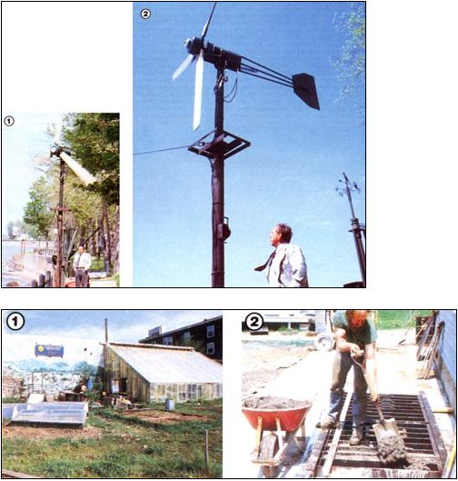
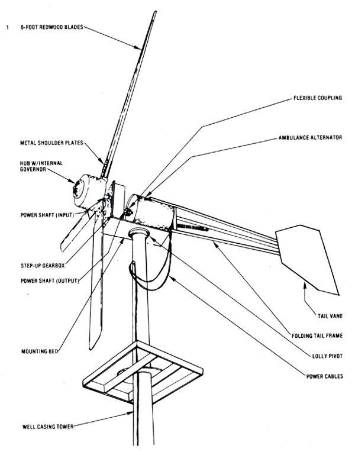

"Dunkirk Man Builds Windmill at Modest Investment, Cuts his Utility Bill."
That headline, along with a short article, ran in the August 1, 1978 edition of western New York's Dunkirk- Fredonia Evening Observer. It was hardly earth-shattering news, but it did stick in the memory of MOTHER's editors . . . one of whom recently paid a visit to Empire Stater Marshall Price's home on the shores of Lake Erie.
And what our staffer saw there was yet another example of commonsense appropriate technology. Mr. Price, a typewriter repairman by trade and a part-time machinist and welder, had pieced together-for about $300-a wind-driven electrical generator . . . and that power plant has supplied much of his home's electrical needs since Mother's Day of 1976!
MAKE DO, AND MAKE IT WORK
Marshall's story really began after the Price family built their lakeside residence some 15 years ago. The constant breeze blowing off the water served as an ever present reminder that free energy was going begging . . . but it wasn't until Mr. Price started collecting information on wind machines, and ran across "a little red book on homemade energy" (THE Mother Earth News Handbook of Homemade Power), that he finally found the answer to the problem that had been keeping him from building his own plant: the need for information concerning the design and fabrication of the all-important wooden blades. Once he'd uncovered that technique, the rest, for the most part, was a matter of locating junkyard parts and fitting them together so they'd be compatible with one another and with the nature of the lakeside breezes.
"One thing about wind . . . it's darned unpredictable. It can be blowing nicely at a steady 18 miles per hour, and then all of a sudden it whips up to 30 knots without as much as a `how do you do'. On top of that, it changes direction just as erratically . . . and that can play the devil with your equipment. A 12' rotor spinning at 200 RPM or so has tremendous inertia, and doesn't take easily to being reoriented."
It was critical, then, that Marshall Price plan for these contingencies before beginning the construction of his plant. He first scrounged a Delco ambulance alternator that was capable of putting out 147 amps at about 15 volts . . . which figures out to be over 2,000 watts in a very strong breeze. After reconditioning this component, the do-it-yourself started working on a gover nor system that'd allow his three 6' blades to feather-that is, pivot on their mounts when wind speeds got dangerously high. (When feathered, the blades are less effective as airfoils, and thus keep the rotor's RPM within safe limits.)
According to Price, this hub-mounted control setup is similar to the type Marcellus Jacobs used on his well-known wind machines. "I'd read stories about Jacobs, and I wanted to know how his governor worked. Well, I finally located a copy of a drawing from an old service manual, studied it, and then built my own version. It acts on centrifugal force and uses lead weights, linkages, and springs-to control the blades' pitch. I knew I wanted a top speed of about 230 RPM on the power shaft, so I just used the trial-and-error method to set up the governor correctly. During the winter I made a little testing stand in the basement and mounted the hub on it . . . then I drove the unit with a belt connected to my walking - tractor's engine, took RPM readings off the hub using a tachometer, and experimented with the governor until I got it right. I've been using it ever since, and by gosh,, it works!"
Of course, if it's to generate usable electricity, the alternator must spin a good deal faster than 230 RPM, so Marshall set about making a gearbox that would step up the generator's speed considerably. To accomplish this, he just welded a housing out of 1/4" plate and mounted two salvaged Chevrolet gear sets inside. The 8.2-to-1 ratio thus created means that for every one turn the power shaft on the hub makes, the alternator shaft spins 8.2 times . . . or at about 1,800 RPM in near-gale (36 MPH) winds.
The power shaft itself was recycled from an old Datsun. "I bought the whole car for $10, then sold the body to a junkyard for $15. That left me with the entire drive train . . . and with a profit of $5.00. 1 stripped out the swing arms from the independent rear suspension, used one for the wind plant bearings and all-and kept the other as a spare."
Having taken care of governing the high speed performance of his generator, Mr. Price had to consider control at low RPM, as well. Specifically, he used a micro switch - activated centrifugally--to energize the alternator's field windings when the shaft speed reached approximately 750 RPM. (Translated into wind velocity, that means that the generator doesn't start charging until the breezes reach 7 or 8 MPH.) Below that speed, the alternator is ineffective anyway, so there's little use in allowing battery power to drain into the field circuit at such times.
Finally, to protect his equipment from the inevitable heavy blows that occur periodically, Marshall hinged and "loaded" the wind plant's tail frame so it could be folded parallel to the plane of the blades when necessary. A small cable winch mounted at the base of the tower keeps the tail perpendicular to the rotor path under normal conditions, making maximum use of the wind . . . but when that cable is released, the vane swings to one side, and the tips-rather than the faces-of the blades are then presented to the breeze, protecting the rotor against over spinning.
This method of restraint is commonly used in upwind-type machines, but in this case, Mr. Price again took a tip from the Jacobs design and set the tail springs so they'd shut down the wind plant if the cable broke, rather than open it to the full force of a storm. Then too, Marshall points out that he can take advantage of his machine even in strong winds, simply by unwinding the winch partially and allowing his blades to face the breeze at an angle, so they'll spill off a good deal of wind and yet continue to turn rapidly enough to generate power.
HANDMADEREDWOOD BLADES
Obviously, a knack for scrounging, coupled with the ability to understand the potential of each "junk" component, aided Price immeasurably in bringing his project to completion. But he knew from the start that he'd have to fashion the blades from scratch.
"I went and handpicked three straight grain redwood 2 X 8's from the lumberyard, then cut and shaped them according to the specifications in the homemade power book. Because wind plant blades are driven by the wind-they don't drive into it themselves as an aircraft propeller does their contour must differ from that of a standard propeller if they're to work correctly. After I'd formed and sanded the wood, I protected it with fiberglass resin and matting-coating it evenly to maintain proper balance at speed-then roughed up the glass lightly and gave each blade another coat.
"Now those redwood airfoils aren't just bolted to the hub . . . each spar coming off the governor pinions is 7/8"-diameter cold rolled steel, and extends a full 20 inches into a socket that's been bored into the blade. Furthermore, these internal spines are pinned through the wooden shoulders, and I've also got them sandwiched on the outside with 6" X 6" metal plates. This way, I can have my feathering feature as a governor, and still feel comfortable about the integrity of those redwood blades at higher wind speeds."
THE CHAIN'S WEAK LINK
After fabricating the blades and working out the best method of mounting them, Marshall had only to erect a tower and place the plant atop it. Since the source of wind is generally from the lakeside quadrants (and thus doesn't suffer interference from trees or hills), it wasn't necessary for Mr. Price to build a fancy lolly pivot or to rely upon altitude to catch the best breezes. He simply
sank a length of well casing into a concrete footer, leaving about 18 feet of the casing exposed. Then he mounted the generator and gearbox on a frame and set that into the tower so it would pivot on a vertical axis. Double-aught copper cables (purchased at scrap prices from the power company)with plenty of slack to allow for yaw-carry generated current to the battery bank.
Energy storage is, according to Price, the weak link in his system. "There's absolutely no problem at all in making the power . . . that's the easy part. If I need more juice, all I have to do is build another wind plant . . . or several, if I want to set up a full-scale wind farm. But decent storage something that's affordable and can still take the abuse of constant charge and discharge-is hard to come by."
Naturally, Marshall could have avoided that pitfall by generating alternating current and then either using it on a separate line or feeding it back into the utility grid ... but he decided against both those options because he wanted (1j a system that would allow him to be somewhat independent of the power companies, and [2] one that would be working even when the wind wasn't.
As his setup stands now, the outsized alternator generates alternating current, which is rectified to direct current through diodes, then stored in a mixed grill of batteries composed of 2- and 6-volt components. That bank is wired in a series-parallel circuit to achieve 12 volts total, and that power is fed through a stand-alone inverter that converts the storable DC back into AC, for use throughout most of the house.
Mr. Price doesn't use a voltage regulator on his system, because the batteries-when they're depleted-require a good three days of steady wind to even approach the overcharging point. In fact, he simply uses his appliances as indicators of his storage bank's state of charge: "I can tell by the way the lights burn. If they're too bright, I know I'm getting 13 volts instead of my usual 12 to 12.5, so I have to shut down the plant. On the other hand, if the batteries are low, the picture on my color TV gets distorted in the upper right-hand corner, and that tells me it's time to crank the tail out straight again. A few years back, we had a nine day spell without any appreciable breeze, and the cells were able to handle that, so I'm not too worried about my storage capacity."
Of course, batteries do lose their effectiveness, especially when they've seen a good deal of service. But Price stresses the importance of maintaining a cost-effective approach to these essential pieces of equipment. He cites as an example an offer that was made to him several months ago: "A fellow had three huge Pullman car batteries that he wanted $3,700 for. Now if I left that amount of money in the bank at 10% interest, it'd pay my power bill for quite a few years to come, so those Pullman units weren't a good buy. Instead, I'd get a number of smaller batteries, pay maybe $25 or $30 apiece for them, and use them to the bitter end. They might not last as long, but at that price I could afford to replace them."
A SOUND INVESTMENT
This brings us to the all-important bottom line: Has Marshall Price's investment -of both dollars and time-been reasonably rewarded? Interestingly enough, he admits that, at first, his main objective was simply to have one wind-powered light source over his reading chair. Then, as he made improvements in his plant and added more lights, he boosted his storage capacity, as well. Eventually, seeing that the generator easily kept abreast of his power usage, he installed the inverter and then tied other appliances-including the color TV-into the line. Today, everything in his household is powered by the wind, save for the dishwasher, the washing machine, and the refrigerator . . . and the cost of operating those conveniences averages between $13 and $17 per month.
But that's not all: At one point, Marshall had installed a resistive heating element in his furnace boiler to make supplemental hot water when the battery bank was fully charged. A switch allowed him to divert power directly from the wind plant to the element-which required no regulation and thereby permitted him to make even further use of available winds, because he never had to shut his generator down. (That simple load management system, though effective, was dismantled when Price replaced his leaky boiler tank with a new model.)
In summary, Marshall Price is an example of someone who-with the help of his welding and metal-shop skills-turned several hundred dollars' worth of scrap yard parts into the equivalent of a several thousand-dollar investment... one that demands little more than an annual checkup (and a battery-recruiting effort every so many years). It doesn't take a very sharp pencil to make sense of economics like that! I guess you could say . . . the Price was right!
Marshall Price's plan, Wind Driven Electric Generator, is available on Mother's shopping page.
|
 STAFF AUTHOR [1] Marshall Price provides some human scale to aid in gauging the height of his lakeside wind generator. The tower is a section of well casing, and the machinery pivots to face the breeze on a simple lolly axis that prevents 360? rotation. [2] The wind plant's alternator and step-up drive are salvaged automotive components, and the governing hub and blades are home built. The weathervane indicates that the prevailing winds are, in general, westerly.[3] As a means of over speed control in strong winds, Marshall designed his tail frame so it could be folded parallel with the blades if necessary. In this partially furled position, the tail vane directs the rotor into the wind at an angle, thus shunting off much of its force. (41 The storage bank is a combination of 2- and 6-volt batteries wired in a series-parallel circuit to achieve 12 volts overall. An inverter changes the direct current into AC for use in the house |
 |
|